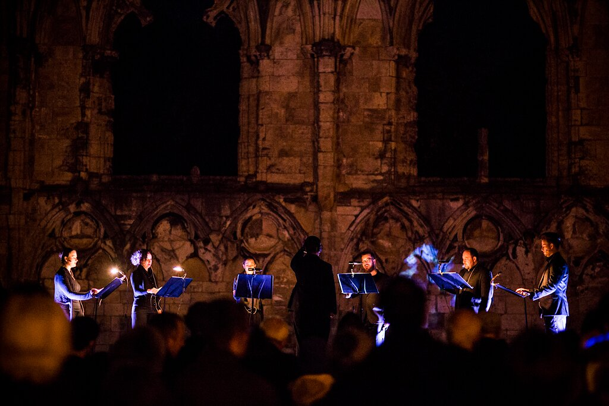

1 Music
1.1 Ambrose Field: Featured Music
- Architexture I
{{< youtube id="OksbYjYq9bg" >}}
- Pod two: in memoriam Gorecki
{{< youtube id="-eAPAleUSVw" >}}
- Being Dufay
{{< dufay >}}
## [[https://open.spotify.com/album/3cqtE4CdZbLMJdPT9XJwe9][Listen on Spotify: Being Dufay]
[BEING]{{< spotify "3C2AGv5NxbE5HysFbeSxZC" >}}
[>> Explore more music](/pages)
2 Pages
2.1 Architexture Series: evidence-based, bespoke architectually linked compositions.
2.1.1 The Architexture Series Music
The Architexture Series of works makes use of the sonic profile of buildings as an evidence base for musical composition.
Detailed links between the musical score and the unique spatial and acoustic characteristics of the performance site are embedded within these compositions. Modelling the acoustic in this way during the musical composition process can help achieve a closer bond between the notes on the page and the sound perceived by listeners.
The purpose of this project is to blur the lines between space, live-art and performance by allowing the situated built environment to become an essential part of a living and evolving musical construction process.
Traditionally, composers for centuries have anticipated how spaces are appropriate for the music they write, and acoustic music generally reflects the constraints of performance acoustics it was intended for.
In the Architexture Series the resonant sounds created by buildings in response to the perfromance are not left to chance. Instead, the whole system of performers, space, and musical score is treated as a sound-making environment which can be designed for. This work builds on traditional ideas of writing music for a particular space but re-thinks some of the inherent relationships involved. It attempts to use the space itself as a live sonic performer within an ensemble - an active contributor to an unfolding composition - rather than as a static 'effect'. Through designing structured ways to provoke reverberation, to blur certain harmonies and not others, to respond to particular spatial locations and not others, opens up new compositional possibilities. This is only possible through detailed acoustical analysis and a composition process which makes use of this information as an evidence-base for sculpting lines and harmonies.
The Architexture Series presently comprises three explorations into this area through addressing the layering of past and present within a heritage building (The Guildhall, York), a large-scale openair public Augmented Reality Presentation (European researcher's night), and a spatially recorded piece of audio under controlled studio conditions.
New relationships between audience, the performance site and the performers emerge from these bespoke pieces of music for voices. Architexture I and Architexture 2 both draw on a combination of Renaissance influenced musical craft and spatial data provided through contemporary digital techniques.
 <sub><sup><sub>Images: Ian Martindale</sup></sub></sup>
2.1.2 Sites, resonances, and history
Reverberation has always been attractive to me as a composer: the joy of hearing performances where a buildings make a unique contribution to the event is a thrilling experience. However, I started to wonder about how composers might further design the effects the building was producing alongside designing the musical score itself. . Setting aside famous examples such as Gabrielli, many composers tend to think about the acoustic in every aspect of the music they make, looking for clarity of presentation or whether certain textures will simply 'work' in a space. The environment has an imprint on the types and styles of music what we create. I wanted to take this idea a little further, and explore how the sounds of the performance site could be generated and manipulated by the ensemble: building an ensemble as a unified system, working together and challenging the concept of a performance in, or for, a space. Alvin Lucier's piece, I am sitting in a room plays back a room's particular resonance into itself, converting the resonance to a sound source in its own right. There are no other sound sources in Lucier's piece, nor are there any performers. I wanted to harness this now familiar relationship (the idea of 'room tone', as film makers would put it) and take it to a new level: what happens when that resonance itself is manipulated by the performance. To do this required knowing about the detailed acoustic response of venues in advance of composing, and the construction of a computer modelling system so that the notated results of the musical composition could be visualised as harmony with a detailed reverberation profile of the building factored in. My method for doing this is discussed in a research chapter in [this publication]({{<ref "CompResonance.md" >}}). With these tools, when it came to putting notes on the page I could understand the effects and contribution the building would make to the totality of the sounding experience the audience would be immersed within.
2.1.3 Composition, Live-Art and Augmented Reality (AR).
{kind=link}
It would be relatively straightforward to map reverberant data points as a kind of sonification. (Sonification doesn't rule out musicality - it is just a different type of process). Instead, data here in the Architexture Series informs a process where the music I write for performers is shaped and moulded appropriately, treating the reverberation as a line or part in its own right in what is already a dynamic,complex system of interactions. This creates a piece of live-art: the existing building having it's role changed and adapted by the music.
In Architexture II, we worked with a building that doesn't presently exist today through reconstruction and modelling of that space, brought alive by music which specifically uses those spatial characteristics, presented as an audio Augmented Reality. See the [Architexture II page]({{<ref "architexture2.md" >}}) for details.
2.1.4 Multi-disciplinary collaboration
Architexture is a multi-disciplinary project which would not be possible without arts-science collaboration, made possible at the University of York, UK. Often, Art is used as a demonstrator or engagement tool for science, but in this case, acoustic engineering (here in the form of the capture of impulse responses) is a key enabler in creating new forms of immersive public experience through musical craft. Through new music designed to explore site in new ways (rather than through the performance of existing work), creating a situation where the audience are less observers and more participants. The overlay of space and place allows us to think critically about the sites, buildings and the communities which make (or have made) use of them.
{kind=link}
2.1.5 Meet the team
Ambrose Field and Jude Brereton, project leads<br> Jude Brereton, Helena Daffern | acoustic engineering research<br> Paul Gameson | Conductor, Ebor Singers<br> The Ebor Singers | Ensemble<br> Ambrose Field | Musical composition, acoustic mapping<br>
The Architexture II performance was made possible through the work of:
Steven Oxnard | St Mary's Impulse Response Model and Calculation<br> Ameila Gully | Acoustics<br> Lewis Thresh | Processing Graphics<br> Thmoas Krauss | Light<br> Ian Martindale | Photography<br> Radek Rudnicki | Event Video<br> Damian Murphy | Acoustics Engineering <br> Andrew Chadwick | Ambisonics and Live Sound<br> Ben Pugh | Event Management<br>
2.1.6 Publications about project
Book chapters:
Field A. (2016) Composing for the Resonance. Open Music Composer’s Book Vol. 3. Jean Bresson, Gérard Assayag, and Carlos Agon, eds. Paris: Editions Delatour, IRCAM.
Brereton, J. (2017) Music perception and performance in virtual acoustic spaces. Body, Sound and Space in Music and Beyond: Multimodal Explorations. Wöllner, C. (ed.). Routledge.
Related Articles:
Murphy, D. T., Shelley, S. B., Foteinou, A., Brereton, J. S. & Daffern, H. (2017), Acoustic Heritage and Audio Creativity: the Creative Application of Sound in the Representation, Understanding and Experience of Past Environments. Special issue in Internet Archaeology.
Presentations:
Field, A. (2016) Sound in space - Research colloquia, HKBU, HongKong, Sept 2016.
Field, A.: (2017) Reverse Spectralism: designing for the acoustic, University of Oxford, Spectralisms Conference, March 16/17, 2017.
Field, A., Brereton J.,(2015): Architexture II Realisation, European Researchers' night, York, Sept 25th, 2015
Initial work was presented by Field and Brereton at Sounds in Space Symposium, University of Derby, 2014.
2.1.7 Bringing contemporary perspectives to historical architecture
The architexture project has involved creating bespoke music for sites of historic, cultural and acoustic interest. In the heritage context, we have rejected ideas of providing a kind of 'audio time travel' (or taking the audience back to a particular period in time) in favour of creating a situation where the public can experience the past and present together in a unified way through immersive music - inviting thoughtful engagement through personal comparison between past and present.
2.1.8 Listen
Further explore the Architexture Series here:
[Architexture I]({{< ref "architexture1.md" >}}) <br> [Architexture II]({{< ref "architexture2.md" >}}) <br>
Architexture III is presently in production.
related work: <br> [Pod Twoja Obrne]({{< ref "podtwoja.md" >}}) <br>, for 25 part choir.
2.1.9 Commissioning for your venue
The architexture team produce exciting new musical work which engages with ensembles, heritage and communities. If you would like to explore working with us we'd be happy to hear from you.
2.2 Architexture I, for 10 part choir
18 mins | 2012 | 10-part Choir (SSAATTBarBarBB)
{{< youtube id="OksbYjYq9bg" >}}
2.2.1 About the composition
Architexture I is a choral music work in which the acoustic of the performance venue is designed into the substance of the music itself. This is done through the use of three-dimensional acoustic analysis techniques to inform a traditional “pen and paper” composition process. The harmony, the speed of vocal entries, and the way they overlap each other in time, are sculpted with knowledge of the architectural acoustics of the space. Specific chords linger in the air, resulting in a beautiful unity of space and notes. Pieces in the architexture series are designed specifically for a particular choir and venue. The musical language is a richly harmonic one, exploiting the author's 'extensible polyphony' technique to achieve clarity within dense, overlapping vocal textures.
Architexture I is scored for 10 part choir (S,S,A,A,T,T,Ba,Ba,B,B one-to-a-part) lasting 18 minutes duration.
The piece as recorded above is configured for the acoustic of the Guildhall, a heritage building in York, UK. If you would like to present a new version of this piece which fully exploit the acoustic your venue for any number of performers, I would be happy to hear from you.
See [this description]({{< ref "archproject.md" >}}) of the architexture project itself for more information.
2.3 Architexture II, for 6 part choir @AR @acoustics @heritage @liveart
20 mins | 2015 | 6-part Choir (SSAATB)
Architexture II was composed for a public augmented reality experience. Over 600 people attended the premier at St. Mary's York, where we re-constructed the acoustic St Mary's would have had were it still standing, and performed Architexture II - a vocal work specifically designed to provide an immersive and accurate interaction with with the re-created space.
See [this description]({{< ref "archproject.md" >}}) of the architexture project itself for more information.
{kind=link}
{{< youtube id="KZWeDSgkPDg" >}}
2.3.1 Performing this work elsewhere
As the acoustic is simulated in this piece, it is possible to re-perform the work in other venues. The score and patch for PureData (Pd) is available upon request from the author. Later this year, these will be placed on my public github repository.
- Musical Construction
Architexture II, a 20 minute vocal work for six part choir exploits the specific architectural acoustics characteristics of a heritage building which is no longer present today. As this is new music, and not a 'historical re-construction', it is possible to bring the public experience closer to the reality of the past in new ways: the composition Architexture II is designed to closely match this physical site. If we had selected generic repertoire from the same period to perform within a simulated acoustic, it would not be possible to fully know that the works really had a tight relationship with the exact building with which we were working, or indeed how choral directors of the day would have articulated them due to the limitations of written documentary evidence from the period and the issue that authentic performance scholarship whilst a valuable resource can not fully capture the actual sounding experience of interacting with a particular space from this period on a detailed and nuanced level. A powerful case for new composition for heritage applications emerges as these relationships can be constructed from the present day in order to present a more rigorously evidenced view of the past.
- Spatial Re-construction
The previous section has outlined how new music was constructured to match the acoustic measurements of a historic building. The performance itself was placed in that space using applied audio engineering techniques as follows.
From site measurements and historical architectural materials data, it is possible to construct an impulse response of a venue using commercial available architectural acoustics software, such as Odeon. The acoustics team used an impulse response generated by Stephen Oxnard, of the Department of Electronics University of York, as the starting point for an ambisonics realisation. This data is available on the OpenAIR lib impulse response archive site. You can download this impulse response and apply it to your own recorded media from
In a team lead by Dr Jude Brereton, Live procesing was applied in a straightforward manner to each singer's microphone via convolution - running the REAPER audio production worksation as a live tool, then decoded through an ambisonics loudspeaker array to give the audience a spatially relevant presentation of the music. Given that the music and acoustic are not separate entities in this performance, care was taken to make sure the live sound (including reflections from the existing building) were appropriate to the demands of the score.
 St. Mary's as it stands today.
St. Mary's as it stands today.
2.4 Frozen Reflection, Sleeping Buffalo: Piano and mechanical resonators
19 mins | 2017 | Piano Solo
 Megumi Masaki
Megumi Masaki
2.4.1 About the work
Frozen Reflection, Sleeping Buffalo uses EBows - electromechanical resonating devices, not as drones in their own right, but to provoke delaicate and unusual timbres from sustained piano chords. The EBows continually vibrate a string as if it had infinate sustain (and are often used by guitarists for this purpose). The piano pedal in this work forms a kind of 'envelope' control, opening up and closing down this resonance. The sounds made by the EBows modlate the chords played by the pianist, creating a shimmering haze of harmonics. The drone itself blends into the background, creating a kind of horizon in the sound landscape around which everything else circulates.
 ebow positioning on piano strings
ebow positioning on piano strings
2.4.2 Arctic cold
It's late December. Air from the Arctic drifts slowly over Alberta, and temperatures reach a chilling minus 30 degrees Celsius. Frozen Reflection Sleeping Buffalo is inspired by the First Nations Legend of Sleeping Buffalo. The piece stems from a period working as an artist at the Banff Centre for the Arts and Innovation, Canada, in Dec 2016. My project at the time was to work on a large-scale orchestral commission. However, whilst doing so I discovered a design method which could combine fixed external resonances with my own choice of colours.
2.4.3 Ebow sounds
The Ebows produce a kind of etherial constant drone sound, but interestingly, also modulate the decay of the other sounds. You can hear a shimmering quality to the sustains as a result of this aural effect. After realising this, I decided to compose these effects into the piece by finding harmonies and textures which would provoke them.
Using EBows on the piano can be a challenge, as other composers have found. The strings to be a low-tension enough to be able to vibrate by the effects of a magnetic field, yet not so thick that they are too heavy to move. This limits the range over which you can place them on the piano. The results are slightly different for different pianos too. After much experimentation, I settled on a range of C4 - REFERENCE.
2.4.4 Musical structure
I've been working with on idea of designing a musical surface, rather than accepting a 'surface' (here taken to mean the totality of the sounding result) as a consequence of other design processes. Composing this way is a bit like sculpting a large block of granite in order to unconvering the form. It's subtractive. In this music, different parts of the surface fades in and out of focus over time. Harmonic centres of importance are spread over the piece so that they become exposed and then gradually subside throughout the piece. Here's a visualisation:
{kind=link}
2.4.5 Organisation
Frozen Reflection Sleeping Buffalo has two sections. In the first, small, isolated moments are set against a continuity of delicate drones provided by the Ebows. Tiny changes in the resonance of the decay occur as the ebow drones interfere with the other pitches to produce modulation artefacts. In order to design these more carefully than in my initial experiements, I needed to model these acoustic effects in Open Music (see below).
The second section is a reversal, or reflection of the first in almost every way. Instead of building harmony on top of drone-like resonances as previously, I wanted to gradually fill out the negative-space around the drone-sounds is inverted with dense, angular chromatic writing.
The piano chords appear to take on a transparent, shimmering quality during these silences-in-sound.

Figure 5: frozen1
2.4.6 Watch the video
{{< youtube id="e2-Ndzyv6K0" >}} Listen quietly, with headphones
2.4.7 Tunnel Mountain
In the First Nations legend Tunnel mountain, Banff, is a reagrded as a sacred place. It is a place where people come to share knowledge and discover new bonds to their surroundings and culture. Then they leave.

photo: Courtney Powless
2.4.8 Score download
The score can be downloaded from here.
My scores are now hosted as open-source publications on GitHub: this enables the current version published to reflect the current edition of the work. You can also suggest changes (contact me for advice on how to do this) and have your changes merged back into the main document for others to download should you so wish. Information merged back into the project can include performance notes, annotations or suggestions.
2.5 Self-Assembly Unit Series: rethinking score design as reproducable research
2019 | Works intended to be built by performers
2.5.1 Information
A series of pieces where the musicians structure an off-line design process themselves. The score describes these activities, rather than a performance.
{kind=link}
> You can credit yourselves as composers for these pieces under a creative commons license.
- Scoring the rehearsal process, not the performance
The purpose of this work is to investigate what a score for a 'rehearsal process' might be (rather than a score aimed at a 'realisation' of a 'performance'.)
- A parametric, modular score is given where musicans are encouraged to think about the workflow of a design process, rather than to generate sound in a responsive manner to visual stiumuli.
Whilst plenty of scores from Medieval Music to Open Form composition address the challenges of creatively empowering performers, few address the actual rehearsal process itself: the when and why of collaborative decision making whilst in the act of assembling a piece. Self-Assembly Unit series of pieces explores these questions.
- on Timelines and Improvisation
Timelines are often seen as restrictive by improvisors, and graphic score, whilst open-ended, still offers the possibility that the interpretation of even the most abstract visuals will be measured against the works previously made by a particular composer, or failing that, within a broader tradition to which the graphics might be perceived to belong.
- I wanted to reject both of these notions, by turing over the timeline construction as an explicit and defined process to the musicians, in such a way that the process of assembly here has both real-time, and off-line elements to it.
- Flexible, modular score elements and flatpack furniture
Self-Assembly Unit is a series of modular works then, which include the basic ingredients from which a whole work might be fashioned. This isn't a re-assembly of an existing aesthetic either, rather, the performers must go through a series of stages to assemble, from scratch, something which resembles the broad materials and proportions present in the score.
Self-Assembly Unit Series is inspired by authorship debates and flatpack furniture.
- Reproducable research
In research, reproducable-research means that it is possible to inspect the working (generally: code, raw data, processing methods) behind the conclusions presented. I wanted to expose the 'internals' of a composition process to performers, and structure how the assembly of elements is made.
To do this, all the internal elements that go into the process of making up a piece are exposed to the musicians, for change and modification. This is a different way of working to, for example, improvising around a stimulus, as longer-term structural decision making is required to define a collaborative sequence of events. Self Assembly Unit is a score for the workflow of assembly.
- Do I call you performers or composers?
Self assembly unit makes no assumptions about a performance occurring from the score in real-time: there is no sense of 'realisation' (in a performative sense) here. Instead, design relationships are suggested around which the performer can generate a complex web of materials. This score then is entirely off-line and non-realtime. It also has nothing to do with the act of performance either, although it prepares the way for this.
If you are musicians encompasing performers and composers, then what am I? I'm happy with the idea of being desginer for this piece. I've set the overall parameters, but the workflow of creativity is up to you.
{kind=link}
2.5.2 Self Assembly Unit Toolkit
Here is the toolkit for Self Assembly Unit piece. You can absolutely credit yourself as the composer (please see below for the correct way to do this) as you will be making compositional decisions as well as performing. This isn't my piece, it's yours.
Download Self Assembly Unit number 1 Download Self Assembly Unit number 2, for trio Download Self Assembly Unit number 3, for choir (any number of voices) Download Self Assembly Unit number 4, for percussion Download Self Assembly Unit number 5, for any instrumental combination, amplified instruments
- What do you get?
Each piece contains a series of relationships which you are challenged with developing. One parameter per section is exposed.
- Credits, authorship and license
This piece is available under Creative Commons Attribution license You may modify it. You may claim you composed it as well as performed it. You may work with as may other people as you like to make it. But you do need to credit me as the Designer/originator.
- What to do next
If you'd like to perform one please tweet #selfassemblyunit and document your performance on youtube. Send me the link.
- Self Assembly Unit #1, Peyee Chen and James Woodrow
This is an example of what can be achieved.
2.6 IRCAM OM composers' book 3: process for matching notated composition to acoustic profiles.
2017 | Book Chapter
{kind=link}
Book Chapter: Field, A: Composing for the resonance: finding new relationships between architecture and musical composition
This chapter documents research which led to the creation of the Architexture Series of vocal works. The article describes a set of techniques to show, on a stave, the effect of reverberation of the venue. A composition can be planned out to take account of the acoustic.
The information displayed is not a visualisation of a single reverb time: it is spectrally dependent as regards time, making it possible to write for bass or soprano and know the exact effect, rather than a generic approximation, that texture might have.
Doing this in audio would be no problem today. Although it is possible to apply the reverb trace of a real-world venue to audio signals recorded elsewhere unsing convolution techniques, there currently is no method for understanding how notated music will be affected by reverberation. A method for demonstrating the bluring that occurs within performance is proposed, which enabled me to design new acoustic music with the venue in mind in an informed way.
- Publisher information
> How to cite this article:
> Field, A, (2016). Composing for the resonance: finding new relationships between architecture and musical composition In: Bresson, J., Agon, C. and Assayag, G. (Eds.), The OM Composer's Book. (pp. 155-171). France: Editions Delatour/Ircam-Centre Pompidou. ISBN 978-2-7521-0283-6
Open access text available here:
- Abstract
This chapter documents my search for a new compositional method that could be informed by the acoustic response of the venue in which a piece is to be performed. Although composers have written pieces for particular spaces for centuries, this is traditionally a process informed by aural memory. I had two main aims: I wanted my work to have a tight bond between score and acoustic result, and I wanted to be able to design pieces where the acoustic contribution of a venue would be a known entity at composition time - rather than an after-effect of a performance. Both of these factors create new musical possibilities as they permit the space itself to become an integrated part of the composition. This body of work would not have been possible without OM, and the role of the system is explained with example patches demonstrating sound analysis, harmonic selection, rhythmic generation and texture manipulation.
2.7 Transmission Cycle, for Tenor and Strings: 40 mins, large-scale work for Jazz.ro
{{< soundcloud 145651175 >}}
40 minutes | String quartet and solo Tenor | 2014

Transmission cycle was commissioned by the Jazz.ro supported festival Jazz in Church, Bucharest.
An epic journey in sound, starting from simple premises, with melodic threads slowly unwinding unbroken over the course of 40 minutes. The piece is scored for amplifed string quartet and solo tenor. The string lines build slowly then fade in and out of focus, creating a shimmering haze of harmony above which the tenor line floats. Fragments of text from Ovid's Metamorphosis are delivered as if they were part of a distant news broadcast.
The premier, to a packed audience, was performed by: Mihai Balabas, violin; Marina Pingulescu, violin; Maria Coltatu, viola; Corina Ciuplea, cello.
"Along with the subtle sequencing of harmonies, the reflecting sound surfaces brought ebbing melodicism out in the generous space created by the recitative tenor line.. poignant" ADRIANA CARCU, All about Jazz review
Transmission Cycle, and an interview, was broadcast on Romanian TV.
2.7.1 Structure and Design considerations
The piece represents the first large-scale work where I was specifically thinking about the effect the acoustic would have on the performance. Although this pre-dates pieces such as Architexture I for ten-part choir and Quantaform Series for solo flute which use measurement techniques to help bind the piece to the acoustic of the venue, Transmission Cycle leaves time and space for the acoustic to become a performer too, creating floating suspensions and drones whilst the musicians move on to other materials. Harmonically, the work also represented a pivotal moment: I was at this point testing my new thinking on Designing Music as a Surface where lines are sculpted out from larger blocks of material. During this work you can also hear the surroundings for these lines, as if they were silent actors in the performance through the gaps and spaces that are left behind. It's a kind of acoustic subtractive synthesis in this case.
2.8 Anagram for, tenor and electronics - Premier the Old Customs House, Tampere
{{< vimeo 26158788 >}} <sub><sub> with Film by Michael Lynch</sub></sub>
Anagram is a followup project to Being Dufay and premiered at the Old Customs House, Tempere vocal festival in 2013. The work explores different ways of using pre-existing text to that within Being Dufay, searching for what I'll term the minimum trace: what is just enough to make a link to a pre-existing work, yet not so much that the piece overtly borrows material.
In Being Dufay, the approach to pre-existing music is to present it exactly as is, without hybridisation or attempts at cross-over. Editing is the sole compositional tool, and in the 50 minutes of the album, there is a sum-total of 6 minutes end-to-end Dufay. There are no substantive changes to the notes, or to the words.
In Anagram the text is from a song by Gombert. I wanted to capture something of Gombert's approach to polyphony where a unique line often sits above a swirling texture of intricately layered material. Towards the end of the piece, I'm trying a new version of an old vocoder effect. Vocoders have been around since the 1960s, enabling electronic textures to take on vocal qualities. What results, is a set of static harmonies based on the sounds being input. This version is a little different as it bends the input sounds towards the voice.
2.9 Quantaform Series for Solo Flute in reverberant spaces Space_and_Music
C Flute, 40 mins duration
- Background and new 2019 Realisation
Quantform Series is an unusual 20 movement work for solo flute where each movement is precisely matched to the acoustics of the site in which it is to be performed. Each of the twenty movements is written to match a different acoustic space. The choice of which movements to perform, and in what order, is up to the performer.
The pieces are tightly focused and short. Silence - and pauses in sound - play a significant part in this work as the reverberation from the venue is treated as if it were also a performer itself. The influence of the Japanese Shakuhachi (bamboo flute) is never far away. The performer must agilely create delicate overtone timbres and beautiful pitch-bends.
Quantaform Series calls for an extensive range of expressive control from the performer. Shaping the onsets of notes, the performer is ask to carefully control first few milliseconds of each sound to create distinctive 'envelope' patterns of attack and decay.
Through this technique well-known to synthesiser performers of electronic music, time can be made to feel like it is flowing backwards (through reversed amplitude envelopes), and sound can take on beautiful feeling of sustain (through smoothing out the onsets).
This process poses a considerable technical challenge to the performer, as these aspects of performance lie beyond articulating the notes and require a detailed concern for their micro-level shaping. Perhaps as a consequence, Quantaform Series has been taken-up as an finals examination work in Music Conservertoires (both in the UK and Europe) for graduate-level flautists.
Virtuoso Jos Zwaanenburg first performed the cycle in 2013, and made a commercial recording of it on Sargasso (Sargasso: SCD-28071) - a contemporary music record label known for releases by Jonathan Harvey and Simon Emmerson. This recording used studio reverberation to re-create the performance environments to which the movements were linked. It is also possible to perform the work live this way, using an electronic reverberation unit (or pD/Max patch) and amplification.
However, the original intention for realisation of Quantaform Series was more challenging: to record each movement within an real (rather than simulated) acoustic space matching the required reverberation characteristics. This in practical terms is a complex process,as a performer would need to organise performances in up-to twenty different locations, creating a coherent bond between the acoustics of the site and the notes on the musical score.
For the first time in 2019 this is made possible through a grant from the Arts Council National Lottery Heritage Fund. This enables the making of a film featuring exceptional Leeds-based flautist James Wilson. Through the support of Screen Yorkshire, James will perform in real-world locations from around Yorkshire, pitting flute against environment in an unusual and dramatic dialogue in locations ranging from urban powerstations to sweeping natural vistas.
- Original realisation - Jos Zwaanenburg
{{< vimeo 42241755 >}}
I was intrigued to see how Jos Zwaanenburg would tackle award winning contemporary composer Ambrose Field's flute compositions. Divided into two different sections each deals with the flute in a different way.
http://idwalfisher.blogspot.com/2013/09/
The project marks a significant strand of new thinking in my compositional process. I wanted to link the composition and performance process in new ways, in this case, by understanding the acoustic in which the performance could be made and working backwards from that to the composition of the notes on the page. Too much of Western composition, for me, is in the abstract - looking at a score conjures up a vision of a dislocated, 'ideal' performance where the acoustic contribution is visually absent. What if it were not?
I began to design notational tools which enabled me to 'see' what the music would look like in certain reverberant environments. What would a longer acoustic do to the sense of harmonic suspension - or what would performing outside, or in a forest mean for the types of textures that I might write. Composers have had the acoustic of the performance in mind for centuries, and indeed, many of the world's music spaces are specifically designed around the music written for them. I wanted though to be able to take this relationship to a new level, of accurate predicition, of really being able to treat the bond between piece and place as a highly specific.
In order to do this, it is necessary to look not just at the verberation time of a venue, but the spectral content within it and how that sound occupies three-dimensional space. (Please see the [Architexture Series]({{<ref "archproject.md" >}}) of works for further examples of this technique).
- Recording
- Score
A new edition of Quantaform Series is presently being prepared and will be out shortly. In the meantime, please contact me if you'd like to perform it and require the score.
{kind=link}
2.10 Pod Twoją Obronę, for 25 part choir
Pod Twoją Obronę (2013) | for 25 solo voices | Recorded live in Gdansk, with Jan Łukaszewski conducting http://www.youtube.com/watch?feature=player_detailpage&v=-eAPAleUSVw https://youtu.be/-eAPAleUSVw
Pod Twoją Obronę was commissioned by the Polish National Chamber Choir Polski Chor Kameralny to mark the 80th birthday anniversary of composer Henryk Górecki.
It is set for 25 individual voices, one to a part.
This work matches the large, resonant acoustics of the Kościół św. Katarzyny in Gdansk (in which the piece was performed) to the detailed part writing which occurs within the piece. Unlike the works in the [architexture series]({{< ref "archproject.md" >}}), which are written from an evidence base created through acoustic impulse-response analysis, Pod Twoją Obronę relies on straightforward dimensions and materials measurements of the venue (made remotely) to inform the rates at which textures overlap and momentary vocal clarity can be achieved.
You can listen to the results of the live recording (taken from the premier of performance in Gdansk) in the video clip above.
Conducted by Jan Łukaszewski
2.11 Summer 1971: Imperfect forms - Ken Kirschner Remixed
{{< bandcamp 1163390045 >}}
2.11.1 Imperfect Forms - The Music of Kenneth Kirschner Remixed
I was invited to collaborate in the re-mixing of Ken Kirshner's beautiful music. But instead of remixing the work, I decided to intervene at an earlier stage and re-perform it prior to electronic manipulation.
This work is an extract from a longer un-published set of pieces, Kirschner Varations. The work explores how borrowing (acknowledged, and with permission) from a living composer might feel. Part of the problem of Being Dufay was that it wasn't possible to ask Dufay what he thought. Ken Kirschner, on the other hand, was able to input and kindly permitted the re-use of his piece (PIECE TITLE).
Rather than re-using the original piano material as recorded audio, I transcribed and re-performed it on the piano using small loundspeakers mounted inside the piano on the soundboard. Environmental sounds were played through these speakers influencing the colour of the notes and sustains. I wanted to create a dreamy atmosphere with a tint of sonic nostalgia. Reprocessing of the recorded audio was accomplished using the Kyma Sound Design workstation (Kyma/Capybara). This particular track is one of the more highly processed, leaving little trace of the original recordings as the soundscape here is distilled to just the essential elements.
2.12 Frozen Voyagers, electroacoustic sounds, high-order ambisonics spatial audio
Frozen Voyagers premiered at the MUTEK festival, Canada in 2014 in cinechamber : a spectacular 360 degree surround audio and video auditorium curated by Naut Humon from Recombinant Media Labs. The piece is designed to maximise the spatial qualities of the venue and sound projection system. I'm aiming to try and capture a sense of 'frozen time' through the huge amount of swirling audio activity: standing within this sonic vortex might be a little like being in the eye of the storm: stillness and extreme motion at the same time.
To create an unusual immersive sound spatialisation, I chose a dual-technique approach on this piece. Third order ambisonics helped to generate a sense of defined locations for sounds which needed to be easy to locate. This was combined with first-order ambisonics, chosen to create a sense of diffuse, seemless ambience. Each technique has its own merits: the more technically 'precise' system of higer order ambisonics is not necessairly musically more useful than first order. As Ambisonics is backwards compatible, it is straightforward to mix first order techniques and more advanced methods.
The sonic material of piece itself dates from a period of work at Recombinant Media Labs' San Francisco facility in 2006. Here, I installed myself in the 'synth room' at any possible opportunity, being able to use modular surge.
The piece is available as a ten channel version.
2.13 Being Dufay
2.14 ----------------–— got to here -------
2.15 Janet Lightpath remix (necessary?)
3 About
3.1 Ambrose Field
Ambrose Field's music has been described as "Mesmerising and beautiful" by ClassicFM magazine, featuring "Interlocking tonal nuances of fragile beauty, without equal" by JazzEcho.de and "Completely Compelling" by BBC Music. His pieces combine huge, lush harmonic soundscapes with a focused, contemporary aesthetic. Field's work has been performed in venues including The Vienna Konzerthaus, Parco Della Musica, Rome, The Chicago Early Music Festival, Perth Festival, Australia, Dancity Festival, Italy and the Los Angeles Convention Centre. He has been a resident composer at Hungarian National Radio (supported by UNESCO), Recombinant Media Labs San Francisco, and the Banff Centre for Arts and Creativity, Canada. His album Being Dufay, is recorded on ECM records (ECM 2071) and is distributed by Universal. It toured to 13 nations as a live performance.
Field writes for instruments, choirs, and electronic media. His music has been commissioned widely for concert performance and for media applications. The large-scale vocal piece Pod Twoją obronę (25 voices, one-to-a-part) for the Polish National Chamber Choir Polski Chor Kameralny is a monolithic vocal soundscape of sculptural proportions and was specifically commissioned to honour the 80th Birthday Anniversary of notable Polish composer H. M. Górecki . For his work with technology, he is a three-time recipient of the honorary award at the Prix Ars Electronica, Linz, and has received international performances including in the RML Cinechamber at MUTEK, Canada, 2014. Interdisciplinary creative questions underpin his output. Field's series of architecturally informed compositions Architexture make use of specific acoustics of a site to inform how a score is crafted. The technically challenging cycle of pieces for solo flute Quantaform Series, which re-thinks the relationship between performer and environment, is to be the subject of a new film made with support of the Arts Council UK and National Lottery Heritage Fund (2019). He has collaborated with researchers in other disciplines (sculpture, health science, education, heritage), worked as industrial consultant to media companies and technology firms, acted as investigator and co-investigator on research grants, and served as a jury member for national and international composition competitions.
Ambrose is presently Head of Department of Music at the University of York, UK. He was interim Dean of Arts and Humanities in 2019-19, and was appointed to Honorary Professorships at the Beijing Institute for Advanced Innovation, and China National School of Music, China Conservatory in 2018.
4 Posts
4.1 Landing text for posts
This is the landing text for the posts menu.
4.2 TODO First Post topic here @my_topic_tag
This is the text for the first draft. It's getting longer all the time.
4.3 TODO Second post topic here @my_topic_tag
4.4 TODO Third topic here, but this is done @topic3
This is the third topic, but it is done.